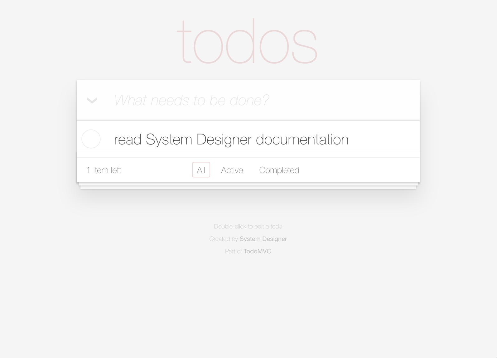
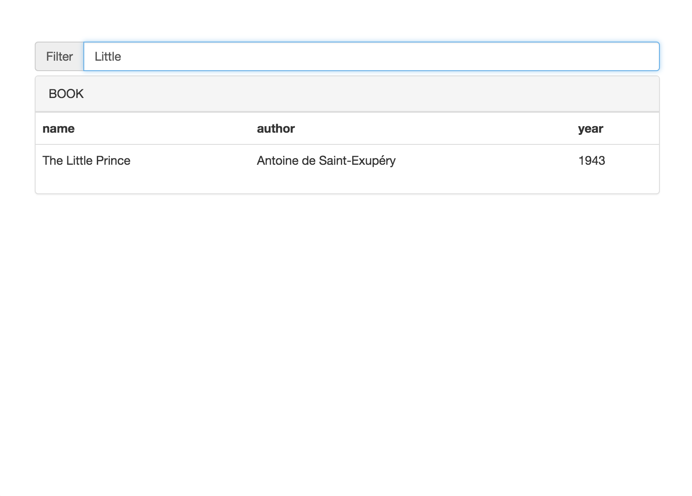
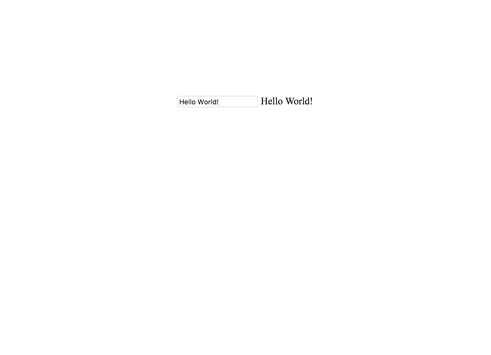

List of Examples
Here a list of examples that you can import in System Designer and test.
How to install the examples?
- right-click on Download the example,
- save it on your computer,
- open System Designer,
- drop the saved file on System Designer,
- a dialog will be shown and
- click on Import button.
Create a Todo manager
The purpose of this example is to learn how to code in System Designer.
Taken from TodoMVC. Based on the work made by TasteJS (under a Creative Commons Attribution 4.0 International License).

Create a DVD collection
This system shows a list of DVD.
If you create a DVD Component when running the system, the list will be automatically updated.

Create a filtering list
- create a schema, example Book, add properties,
- create Book components,
- open list component, and set 'model' property to Book,
- run the application and
- you see the list of your components and you can filter that list.

Create a Web Component
The tag <mywidget message="hello world !"/> is added to the body of the page. This tag calls the component MyWidget. It generates an input and a span tag that are binded: the value in the span change if you change the input value.
note: the purpose of the example is to show how easily you can create Web Component, and we show only one way to do that.

Create a REST server
- create a schema, example Book, make it inherit from SyncComponent, add properties,
- create Book components and
- run the application (* System Designer macOS, Windows and Linux versions only).
Now you can send GET/POST/PUT/DELETE/PATCH requests to http://127.0.0.1:8080/rest/Book.
note: because the running application and System Designer are synchronized, if you open the Components tab when performing the requests, you will see directly the modification on the panel (i.e. if you delete a component with a DELETE request, it will be removed from System Designer)
Create a REST client
- create a schema, example Book, make it inherit from SyncComponent, add properties
- create Book components and
- run the application.
Now all modications to Book components, will send POST/DELETE/PATCH requests to the server.
note: you use this system with the REST server example:
- import REST server
- create the same schema as in REST Client, make it inherit from SyncComponent, add properties,
- export REST server example in node.js format,
- export REST client example in HTML format,
- copy the generated HTML next to your REST server example,
- run the server and
- go to http://127.0.0.1:8080/REST-Client.html.
All modifications to the synchonized components will be send to the server.
warning: this system uses fetch API, so it does not work on Interner Explorer.